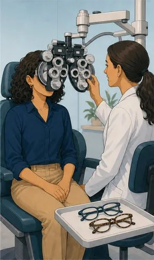
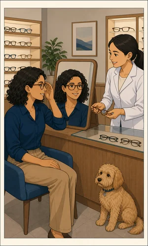

Seguro de saúde
Não substitui o Serviço Nacional de Saúde: complementa-o. O que costuma pesar na decisão é o acesso mais rápido a consultas e exames e a escolha de médico.
O que pode incluir
O que compra
é tempo.
Um seguro de saúde raramente é a decisão mais barata. É a decisão que dá acesso mais rápido e escolha de médico. Antes de assinar convém perceber bem três coisas: a rede, as carências e as exclusões.
Ambulatório
Consultas, exames, análises e tratamentos sem internamento. É a parte que mais se usa no dia-a-dia.
Internamento e cirurgia
Hospitalização, bloco operatório e honorários médicos. É a cobertura com o capital mais alto.
Estomatologia
Consultas, destartarizações, tratamentos e próteses, com limites anuais. Muitas vezes vendida à parte.
Parto e assistência à maternidade
Com período de carência próprio, habitualmente dos mais longos. Contrata-se bem antes de precisar.
Medicamentos
Comparticipação sobre medicação prescrita, com plafond anual e, em regra, coparticipação.
Próteses e ortóteses
Óculos, lentes, aparelhos auditivos e ortopédicos, com sublimites próprios.
Assistência no estrangeiro
Para quem viaja com frequência em trabalho ou passa temporadas fora.
Sem letra pequena
Onde acaba
a cobertura.
Uma leitura geral, para ter ideia clara antes da conversa. Cada apólice tem as suas condições — e é por isso que as lemos consigo, uma a uma.
Ver o que está e o que não está coberto lista indicativa
Normalmente coberto
- Consultas e exames na rede convencionada, a preços de tabela reduzida.
- Internamento e cirurgia, dentro dos capitais contratados.
- Reembolso fora da rede, habitualmente a uma percentagem inferior.
- Estomatologia, quando contratada ou incluída no plano.
- Segunda opinião médica, presente em muitos planos sem custo adicional.
- Linha de aconselhamento médico 24 horas.
Normalmente excluído
- Doenças pré-existentes à data da subscrição, se não aceites expressamente.
- Períodos de carência — nada é coberto antes de decorrido o prazo previsto.
- Cirurgia estética sem finalidade reconstrutiva.
- Tratamentos de fertilidade, na generalidade dos planos base.
- Actos não prescritos por médico ou sem indicação clínica.
- Desportos de alto risco e actividades profissionais perigosas, salvo extensão contratada.
Informação resumida e de carácter geral. As coberturas, limites, exclusões, franquias, carências e demais condições aplicáveis são as constantes da informação pré-contratual e contratual do produto efectivamente proposto.
Quem define coberturas, capitais, franquias e exclusões é a companhia. Consulte a página oficial do produto antes de decidir — e traga-nos as dúvidas.


Para quem
Situações que
vemos todas as semanas.
Família com filhos pequenos
Pediatria, urgências e consultas frequentes fazem do ambulatório a cobertura que mais se rentabiliza. Olhe bem para o plafond anual e para a coparticipação.
Trabalhador independente
Quem não tem seguro da empresa fica com esta despesa por sua conta. Compensa comparar planos individuais com o que já gasta em consultas particulares.
A pensar na maternidade
A carência de parto é das mais longas e deve ser confirmada na solução em causa. Quem espera pela gravidez para contratar chega, em regra, tarde. É das poucas coberturas que se planeia com antecedência.
Perguntas frequentes
O que nos
perguntam ao balcão.
O seguro de saúde substitui o SNS?
Não. Complementa. Continua a ter direito ao Serviço Nacional de Saúde; o seguro dá acesso mais rápido, escolha de médico e conforto, sobretudo em consultas de especialidade e exames.
O que é a rede convencionada?
É o conjunto de hospitais, clínicas e médicos com acordo com a seguradora, onde paga apenas uma pequena parte no acto — a coparticipação — e o resto é liquidado directamente.
Fora da rede paga tudo e pede reembolso, normalmente a uma percentagem inferior. Antes de escolher um plano verificamos consigo se as unidades que já usa estão na rede.
Tenho uma doença crónica. Posso fazer seguro?
Pode candidatar-se. A companhia pode aceitar com exclusão dessa patologia, aceitar com agravamento de prémio, ou recusar. Declarar é a única via segura: uma omissão descoberta em sinistro pode anular o contrato.
O prémio sobe com a idade?
Sim. Na generalidade dos planos individuais o prémio é escalonado por escalões etários e aumenta ao longo da vida. É um factor de longo prazo que explicamos antes de subscrever.
Posso incluir a família na mesma apólice?
Sim. Os planos familiares costumam ter condições mais favoráveis do que várias apólices individuais e simplificam a gestão. Simulamos as duas hipóteses.
Compare planos
com quem lhos explica.
Dizemos o que cada plano cobre de verdade, quais são as carências e se as clínicas que já usa estão na rede.
Sem compromisso. Não usamos os seus dados para mais nada.